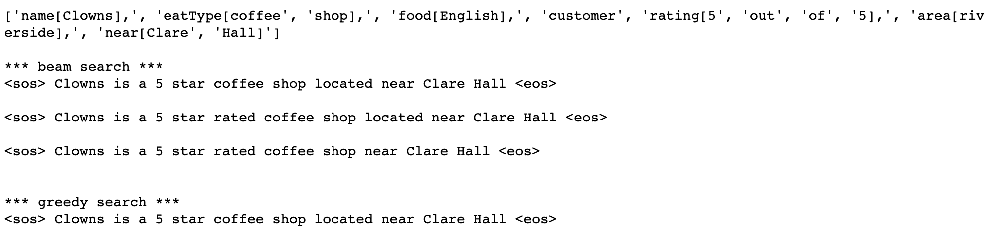

Using NLP to Make Fake Restaurant Reviews



Using NLP to Make Fake Restaurant Reviews
- Natural Language Processing
- Professor Kathleen McKeown
- Fall 2019
- Project URL: https://github.com/analeonnyc/restaurantreviewgenerator
In this project, I generated fake restaurant reviews using encoder-decoder sequence to sequence models. I trained encoder-decoder model on a restaurant description dataset. I then did error analysis on the model I created.
The skeleton code I was provided with performed greedy decoding. I implemented a beam search algorithm that kept track of the top